Tema 3.B.45
La gobernanza económica de la Unión Europea y de la zona euro. El Semestre Europeo. Las reglas fiscales y el Procedimiento de Desequilibrios Macroeconómicos. El Mecanismo Europeo de Estabilidad. La respuesta común de política fiscal a partir de la covid-19.
Pacto de Estabilidad y marco fiscal de 2024, gasto neto, PDE, PDM, Semestre Europeo, MEDE y rescates, SURE, NextGenerationEU y capacidad fiscal común.
Exclusivo Material exclusivo de victorgutierrezmarcos.es y la app Oposición TCEE · DCE. Puedes usarlo libremente para tu estudio personal. No se autoriza su incorporación a otras plataformas, aplicaciones o servicios. Condiciones de uso.
Introducción
Enganche:
«Ayúdate y Dios te ayudará», dice el refrán. Es, casi palabra por palabra, la filosofía con la que la zona del euro se ha gobernado: cada Estado responde de sus cuentas, y la ayuda común llega solo a quien se ayuda a sí mismo.
En 2012, España recibió del Mecanismo Europeo de Estabilidad (MEDE) 41.333 millones de euros para sanear sus cajas de ahorros, a cambio de un memorando de condiciones; en 2020, la Unión se endeudó en común por primera vez a gran escala para financiar la recuperación, a cambio de reformas e inversiones; y en noviembre de 2026, con 10 Estados en procedimiento de déficit excesivo, la AIReF advierte de que España se saldrá de la senda de gasto que pactó con Bruselas.
La pregunta que recorre la exposición es: ¿cómo se gobierna una moneda común sin un Tesoro común?
Relevancia:
Para la zona del euro: 21 Estados, desde la entrada de Bulgaria el 1 de enero de 2026, comparten un banco central y un tipo de interés, pero hacen cada uno su política fiscal; su déficit fue del 3,0 % del PIB en 2025 y su deuda, del 87,7 %.
Para España: el marco europeo fija cuánto puede crecer su gasto hasta 2031, condiciona los fondos europeos y fue el que la rescató en 2012; con una deuda del 100,5 % del PIB en 2025, está en el grupo de países a los que más se les exige [ver tema 4.B.26].
Para la política económica: en 2024 se aprobó la reforma de las reglas fiscales más profunda desde 1997, y en 2025 se activó por primera vez la cláusula nacional de escape, para el gasto en defensa.
Contextualización:
Qué es: la gobernanza económica es el conjunto de reglas, procedimientos e instituciones con los que la Unión coordina y supervisa las políticas económicas de sus Estados, sobre todo las fiscales y las estructurales.
Por qué existe: la Unión Económica y Monetaria es asimétrica. La política monetaria es única y la hace el Banco Central Europeo (BCE) [ver tema 3.B.43]; la fiscal sigue siendo nacional y solo se coordina (art. 121 TFUE). Esa asimetría crea externalidades entre Estados y exige reglas comunes [ver tema 3.B.16].
Sus 3 piezas, que ordenan el título:
la prevención y corrección de los desequilibrios: las reglas fiscales y el procedimiento de desequilibrios macroeconómicos (PDM), coordinados en un calendario anual, el Semestre Europeo;
la gestión de crisis: el MEDE, que presta con condiciones a los Estados que pierden el acceso a los mercados;
la respuesta común: desde la covid-19, instrumentos fiscales financiados con deuda de la Unión (SURE, NextGenerationEU, SAFE).
Problemática:
¿Por qué una unión monetaria necesita reglas fiscales, y por qué han funcionado tan mal?
¿Qué cambia el marco de 2024, y cómo se está aplicando?
¿Quién ayuda a un Estado del euro en crisis, y a cambio de qué?
¿Ha nacido con la pandemia una política fiscal común, o fue una excepción?
Estructura:
La exposición va de los fundamentos a las reglas y de las reglas a las crisis:
I. Fundamentos e instituciones (I): por qué hace falta gobernanza, con el modelo del sesgo deficitario en una unión monetaria; quién la ejerce y cómo ha evolucionado.
II. Reglas fiscales, PDM y Semestre Europeo (II): del Pacto de Estabilidad al marco de 2024, con los modelos de la regla de gasto y de la sostenibilidad de la deuda, y su aplicación; el PDM y el Semestre.
III. Gestión de crisis y respuesta común (III): el MEDE, la respuesta fiscal común desde la covid-19 y el debate sobre una capacidad fiscal central, con su modelo.
3.B.45. La gobernanza económica de la UE y de la zona euro
Introducción2′30″
I. Fundamentos e instituciones de la gobernanza económica7′30″
1. ¿Por qué necesita reglas una unión monetaria?
2. El marco jurídico e institucional
3. La evolución: de Maastricht a la reforma de 2024
II. Las reglas fiscales, el PDM y el Semestre Europeo11′
1. Las reglas fiscales
2. El Procedimiento de Desequilibrios Macroeconómicos
3. El Semestre Europeo
III. La gestión de crisis y la respuesta fiscal común8′
1. El Mecanismo Europeo de Estabilidad
2. La respuesta común a partir de la covid-19
3. ¿Hacia una capacidad fiscal central?
Conclusión1′
Reparto del cante: introducción, 2′30″; I, 7′30″ (I.1, 3′, casi todo para el modelo del sesgo deficitario en la unión monetaria; I.2, 2′; I.3, 2′30″); II, 11′ (II.1, 7′30″, con 1′30″ para el modelo de la regla de gasto y 2′ para el de la sostenibilidad de la deuda; II.2, 2′; II.3, 1′30″); III, 8′ (III.1, 3′; III.2, 2′30″; III.3, 2′30″, con 1′30″ para el modelo de la capacidad fiscal), y conclusión, 1′. Los gráficos y figuras imprescindibles son el del sesgo deficitario, el de la regla de déficit frente a la de gasto, el de la simulación de la deuda con el marco de 2024, la figura del ciclo del marco, el de los rescates por país y el de la capacidad fiscal. Las cifras de las tablas, las cajas grises y los anexos son para las preguntas del tribunal. La aplicación a España se estudia con detalle en el cuarto ejercicio [ver tema 4.B.23] [ver tema 4.B.26] [ver tema 4.A.29]: aquí basta con lo esencial.
Notación y siglas. En el modelo del sesgo deficitario, \(n\) es el número de Estados, \(b_i\) el déficit del Estado \(i\), \(v(b_i)\) su beneficio, \(\pi\) la inflación común, \(\theta\) cuánto responde la inflación al déficit medio y \(\lambda\) el peso de la inflación en las pérdidas. En el de las reglas, \(x\) es la brecha de producción, \(u\) una perturbación de demanda, \(\tau\) el peso de los ingresos en el PIB y \(m\) el multiplicador del gasto. En el de la deuda, con la notación de la dinámica de la deuda, \(d_t\) es la deuda en % del PIB, \(s_t\) el saldo primario, \(i\) el tipo de interés implícito, \(\gamma^N\) el crecimiento del PIB nominal, \(e\) el gasto primario neto sobre el PIB y \(\gamma_{GN}\) su crecimiento. En el de la capacidad fiscal, \(T_i\) son las transferencias a la región \(i\) y \(\phi\) su sensibilidad a la brecha. PEC: Pacto de Estabilidad y Crecimiento; PDE: procedimiento de déficit excesivo; PDM: procedimiento de desequilibrios macroeconómicos; REP: recomendaciones específicas por país; ASD: análisis de sostenibilidad de la deuda; MEDE: Mecanismo Europeo de Estabilidad; FEEF: Facilidad Europea de Estabilización Financiera; MEEF: Mecanismo Europeo de Estabilización Financiera; MRR: Mecanismo de Recuperación y Resiliencia; NGEU: NextGenerationEU; TECG: Tratado de Estabilidad, Coordinación y Gobernanza.
I. Fundamentos e instituciones de la gobernanza económica
Empezamos por la pregunta de fondo: por qué unos Estados soberanos aceptan que otros vigilen sus presupuestos.
Conclusión anticipada: en una unión monetaria, el déficit de un Estado se paga en parte con la inflación, los tipos de interés y la estabilidad de todos; cada Gobierno, por su cuenta, se endeuda de más. Las reglas fiscales, la prohibición de rescatar (art. 125 TFUE) y la vigilancia común son la respuesta. Las ejercen la Comisión y el Consejo, con el Eurogrupo para la zona del euro, y se han endurecido y flexibilizado a golpe de crisis desde Maastricht.
I.1. ¿Por qué necesita reglas una unión monetaria?
I.1.1. Los argumentos
Externalidades fiscales: con un banco central común, la política fiscal de cada Estado afecta a los demás por 3 vías [ver tema 3.B.16]:
el tipo de interés: un Estado que se endeuda mucho sube el tipo de interés de todos, y el BCE puede tener que endurecer la política monetaria común;
la inflación: si los mercados o los Gobiernos esperan que el BCE acabe comprando deuda para evitar una crisis, la tentación de monetizar sube con la deuda de todos [ver tema 3.A.39];
el contagio financiero: una crisis de deuda en un Estado se transmite a los bancos y a la deuda de los demás, como en 2010-2012.
Sesgo deficitario: todas las democracias tienden a endeudarse de más (ilusión fiscal, deuda estratégica, fondo común) [ver tema 3.A.39]; en una unión monetaria el sesgo crece, porque parte del coste lo pagan los demás (I.1.2).
Riesgo moral (moral hazard): si un Estado espera ser rescatado, tiene menos incentivos a la disciplina. Por eso el Tratado prohíbe que la Unión o un Estado asuman los compromisos de otro (cláusula de no corresponsabilidad, no bail-out, art. 125 TFUE) y que el BCE financie a los Estados (art. 123).
La disciplina de mercado no basta: hasta 2008 los mercados prestaron a Grecia casi al mismo tipo que a Alemania, y en 2010-2012 pasaron de la complacencia al pánico. Los Estados del euro se endeudan en una moneda que no emiten, y por eso son vulnerables a crisis que se cumplen solas.
I.1.2. El sesgo deficitario en una unión monetaria
a) Idea
¿Por qué un Gobierno se endeudaría más dentro del euro que fuera? Porque el coste de su deuda, en forma de inflación o de tipos de interés más altos, se reparte entre todos los socios, mientras que el beneficio del gasto se queda en casa. Es un problema de polizón (free rider) sobre un bien común: la estabilidad de la moneda.
Lo formalizaron Beetsma y Uhlig (1999), que justifican así el Pacto de Estabilidad, y Chari y Kehoe (2007), que muestran que, si el banco central no puede comprometerse a no ayudar, las reglas fiscales mejoran el bienestar.1
b) Modelo
i) Supuestos
\(n\) Estados iguales comparten un banco central. Cada Gobierno elige su déficit, \(b_i\).
El déficit da a cada Gobierno un beneficio \(v(b_i)\), cóncavo: con \(v(b_i)=a\,b_i-b_i^2/2\), el beneficio marginal es \(v'(b_i)=a-b_i\) (más gasto o menos impuestos hoy).
El banco central no puede comprometerse del todo: la inflación común sube con el déficit medio, \(\pi=\theta\,\frac1n\sum_jb_j\), porque acaba acomodando parte de la deuda.
La inflación cuesta a cada Estado \(\frac{\lambda}{2}\pi^2\). Cada Gobierno maximiza \(U_i=v(b_i)-\frac{\lambda}{2}\pi^2\) tomando como dado el déficit de los demás (equilibrio de Nash).
ii) Desarrollo
Paso 1: lo que elige cada Gobierno.
Su déficit sube la inflación común solo en \(\theta/n\); la condición de primer orden es \(a-b_i=\lambda\pi\,\theta/n\).
En el equilibrio simétrico (\(b_j=b\), \(\pi=\theta b\)): \(a-b=\lambda\theta^2\,b/n\).
Paso 2: lo que convendría a la unión.
Un planificador que sume las pérdidas de los \(n\) Estados internaliza todo el efecto: \(a-b=\lambda\theta^2\,b\).
Paso 3: la comparación.
\[b^{N}=\frac{a}{1+\lambda\theta^2/n}\;>\;b^{C}=\frac{a}{1+\lambda\theta^2}\tag{1}\]
El déficit de equilibrio es mayor que el cooperativo, y la brecha crece con el número de Estados: cada uno ve solo \(1/n\) del coste de su deuda.
Con \(a=6\), \(\lambda\theta^2=2\) y \(n=4\), cada Gobierno elige un déficit de 4, cuando el de la unión sería 2 (gráfico 1). El triángulo es el coste de la inflación que cada uno impone al resto.
Con \(n=1\) (un país con moneda propia) los 2 coinciden: el sesgo adicional nace de compartir la moneda.
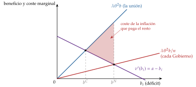
Fuente: elaboración propia a partir de Beetsma y Uhlig (1999), con el ejemplo del texto (\(a=6\), \(\lambda\theta^2=2\), \(n=4\)).
iii) Implicaciones
Hacen falta reglas comunes: un límite al déficit en torno a \(b^{C}\) mejora el bienestar de todos, aunque cada uno, por separado, prefiera saltárselo. Es la justificación del 3 % y del Pacto de Estabilidad.
La independencia del banco central no basta: si el BCE no puede comprometerse a no rescatar, el riesgo moral sigue ahí; por eso el Tratado añade la prohibición de financiar a los Estados y de asumir sus deudas [ver tema 3.B.43].
Las reglas tienen que ser creíbles: con un incentivo a incumplir que crece con \(n\), sin sanciones ni vigilancia el equilibrio vuelve a \(b^{N}\).
c) Extensiones
Por el tipo de interés: el mismo resultado sale si la deuda de cada Estado sube el tipo de interés común en vez de la inflación: el Estado que se endeuda no paga todo el aumento del coste de financiación de los demás.
Con disciplina de mercado: si los mercados cobran a cada Estado una prima según su propia deuda, \(\theta\) deja de ser común y el sesgo baja. Es el argumento de los que prefieren primas de riesgo, reestructuraciones ordenadas y no rescates a las reglas.
Con unión fiscal: si la unión emite deuda común y la controla un Tesoro común, el problema de coordinación desaparece, pero aparece otro, el de quién decide (III.3).
d) Evidencia empírica
Los incumplimientos son la norma: en 2003 Alemania y Francia se saltaron el 3 % y el Consejo dejó en suspenso sus procedimientos; entre 2009 y 2011 llegó a haber 24 procedimientos abiertos (gráfico 4).
La disciplina de mercado falló: entre 1999 y 2007 los diferenciales de la deuda de los Estados del euro frente a Alemania apenas pasaron de unas décimas, con déficits y deudas muy distintos; en 2010-2012 se dispararon.
Las previsiones se maquillan: las previsiones oficiales de los Gobiernos de la zona del euro son más optimistas cuanto más cerca están del límite del déficit, y Grecia comunicó en 2009 un déficit del 3,7 % que acabó siendo de más del 15 %.
e) Valoración
El modelo explica bien por qué la unión necesita reglas, y por qué cada Estado tiene la tentación de saltárselas.
Pero no dice qué regla poner ni cómo hacerla cumplir entre Estados soberanos: no hay un gobierno por encima que sancione con credibilidad. Eso es lo que han ido intentando las instituciones de la Unión.
I.2. El marco jurídico e institucional
La base en los Tratados:
el art. 119 TFUE fija los principios: precios estables, finanzas públicas y condiciones monetarias sanas y balanza de pagos estable;
el art. 121 obliga a coordinar las políticas económicas como «cuestión de interés común», con unas orientaciones generales y una supervisión multilateral: es la base del brazo preventivo y del PDM;
el art. 126 prohíbe los déficits excesivos y regula su procedimiento; el Protocolo n.º 12 fija los valores de referencia: un déficit del 3 % y una deuda del 60 % del PIB;
los arts. 123 a 125 prohíben la financiación monetaria, el acceso privilegiado y el rescate;
el art. 136 permite reglas más estrictas para la zona del euro (las sanciones), y su apartado 3, añadido en 2011, ampara el MEDE;
el art. 122 permite ayudar a un Estado en dificultades graves por causas que escapan a su control: es la base del MEEF, del SURE y del NGEU.
Las instituciones (figura 1):
la Comisión vigila: analiza, propone recomendaciones y abre los procedimientos;
el Consejo en su formación de economía y finanzas (Ecofin) decide por mayoría cualificada; en las decisiones del art. 126 no vota el Estado afectado, y en las fases finales para un Estado del euro (la advertencia y las sanciones, arts. 126.9 y 126.11) solo votan los del euro (art. 139.4);
el Eurogrupo, reunión informal de los ministros de Finanzas de la zona del euro (Protocolo n.º 14), prepara las decisiones del euro y preside la Junta de Gobernadores del MEDE; desde el 12 de diciembre de 2025 lo preside el griego Kyriakos Pierrakakis [ver tema 3.B.36];
la Cumbre del Euro reúne a los jefes de Estado o de Gobierno de la zona del euro, con el presidente del Consejo Europeo, António Costa, y da las orientaciones;
el Parlamento Europeo colegisla los reglamentos y celebra un diálogo económico con la Comisión, el Consejo y los Estados, pero no decide en los procedimientos;
las instituciones fiscales independientes: el Consejo Fiscal Europeo (2016), órgano asesor de la Comisión que preside Pieter Hasekamp, y las nacionales que exige la Directiva de marcos presupuestarios, en España la AIReF (2013), que preside Inés Olóndriz desde marzo de 2026 [ver tema 4.B.21].
Cómo se coordina: no todas las políticas igual.
la monetaria es única (BCE) y la cambiaria, compartida entre el Consejo y el BCE;
la fiscal se coordina de forma estrecha, con reglas numéricas, procedimientos y sanciones;
las estructurales (mercados de trabajo, de productos y de capitales) se coordinan de forma débil, con recomendaciones y el intercambio de buenas prácticas, el método abierto de coordinación.
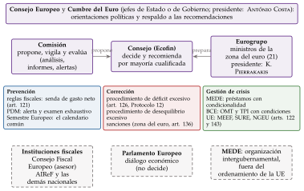
Fuente: elaboración propia a partir de los arts. 121, 126 y 136 del TFUE, el Reglamento 2024/1263, el Reglamento 1176/2011 y el Tratado del MEDE.
I.3. La evolución: de Maastricht a la reforma de 2024
La gobernanza ha cambiado a golpe de crisis, en 5 etapas (figura 2; detalle de las reglas anteriores a 2024 en el anexo A):
Maastricht (1992): los criterios de convergencia para entrar en el euro [ver tema 3.B.43] y, para después, los arts. 121 y 126 con el 3 % y el 60 %.
El Pacto de Estabilidad y Crecimiento (1997): una resolución del Consejo Europeo de Ámsterdam y 2 reglamentos, el 1466/97 (brazo preventivo: programas de estabilidad con un objetivo a medio plazo cercano al equilibrio) y el 1467/97 (brazo correctivo: el PDE, con plazos y sanciones de hasta el 0,5 % del PIB).
La reforma de 2005: tras el choque de 2003 con Alemania y Francia, más flexibilidad: objetivos de medio plazo por país en términos estructurales, «otros factores relevantes» para no abrir un PDE y plazos más largos.
La crisis del euro (2010-2013): el refuerzo.
el Six-Pack (2011): el Semestre Europeo, la regla de gasto, el criterio de deuda (reducir cada año 1/20 del exceso sobre el 60 %), sanciones semiautomáticas por mayoría cualificada inversa y el PDM;
el Tratado de Estabilidad, Coordinación y Gobernanza (TECG, 2012), intergubernamental, con su pacto fiscal: un saldo estructural de al menos el \(-0{,}5\) % del PIB en la legislación nacional, preferiblemente constitucional (en España, la reforma del art. 135 de 2011 y la Ley Orgánica 2/2012) y con un mecanismo de corrección automático [ver tema 4.B.21];
el Two-Pack (2013): los Estados del euro envían su proyecto de presupuesto a la Comisión antes del 15 de octubre, y los que reciben asistencia quedan bajo vigilancia reforzada.
De la flexibilidad a la reforma (2015-2024):
en 2015, el Informe de los cinco presidentes propuso completar la unión en 4 frentes (económico, financiero, fiscal y político), y la Comisión dio margen por el ciclo, las reformas y la inversión;
en marzo de 2020 se activó por primera vez la cláusula general de salvaguardia, que suspendió el ajuste hasta finales de 2023;
en abril de 2024 se aprobó el nuevo marco (II.1.3).
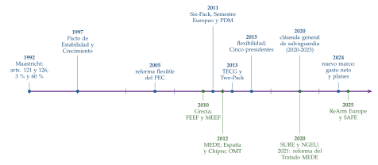
Fuente: elaboración propia. Arriba, las reglas y la coordinación; abajo, la gestión de crisis y la respuesta común.
Recapitulación: la unión monetaria necesita reglas porque cada Estado, por su cuenta, se endeuda de más; las ejercen la Comisión y el Consejo con el Eurogrupo, y se han reformado en cada crisis. Veamos cómo son hoy.
II. Las reglas fiscales, el PDM y el Semestre Europeo
Una vez vistos los fundamentos, pasamos a las reglas con que hoy se vigilan los presupuestos y los desequilibrios, y al calendario que las ordena.
Conclusión anticipada: el Pacto de Estabilidad fracasó por complejo, procíclico e incumplido. El marco de 2024 conserva el 3 % y el 60 %, pero cambia el instrumento: una senda de gasto neto plurianual, pactada con cada Estado a partir de un análisis de la sostenibilidad de su deuda. El PDM vigila el resto de desequilibrios, y el Semestre Europeo encaja todo en un ciclo anual.
II.1. Las reglas fiscales
II.1.1. El Pacto de Estabilidad hasta 2024 y sus problemas
El brazo preventivo (art. 121): cada Estado tenía un objetivo presupuestario a medio plazo (OMP) en términos de saldo estructural (como mucho, un déficit del 1 % del PIB; del 0,5 % con el TECG), con un ajuste de referencia de 0,5 puntos al año y, desde 2011, una regla de gasto: el gasto no podía crecer más que el PIB potencial [ver tema 4.B.4].
El brazo correctivo (art. 126): el PDE, por déficit (más del 3 %) o por deuda (más del 60 % sin bajar 1/20 al año del exceso), con plazos, recomendaciones y sanciones (detalle en el anexo A).
Sus 4 problemas, que la Comisión reconoció al proponer la reforma:
complejo: un vademécum de más de 100 páginas, con cláusulas, márgenes y matrices;
basado en variables no observables: el saldo estructural depende de la brecha de producción, que se revisa mucho a posteriori [ver tema 4.B.4];
procíclico: poco ajuste en las expansiones y mucho en las recesiones, como en 2011-2013;
incumplido y poco creíble: nunca se impuso una multa, y el criterio de deuda del 1/20 pedía a los muy endeudados un ajuste imposible.
El debate de fondo es qué regla elegir: una que dé credibilidad sin ahogar la estabilización.
II.1.2. ¿Qué regla? Regla de déficit frente a regla de gasto
a) Idea
Una regla fiscal es un compromiso: ata las manos del Gobierno frente al sesgo deficitario (I.1.2) y da credibilidad, a cambio de perder flexibilidad ante las perturbaciones. Es el viejo dilema entre reglas y discreción [ver tema 3.A.36].
Las reglas no son iguales en ese dilema. Hay 3 tipos: de saldo (un límite al déficit), de deuda (un nivel de referencia) y de gasto (una senda para el gasto). La pregunta es cuál deja actuar a los estabilizadores automáticos.
b) Modelo
i) Supuestos
La economía tiene una brecha de producción \(x_t\) (en puntos del PIB potencial) que depende de una perturbación de demanda \(u_t\) y del gasto público: \(x_t=u_t+m\,\hat g_t\), con \(\hat g_t\) la desviación del gasto respecto de su senda y \(m>0\) el multiplicador.
Los ingresos son proporcionales a la producción: se desvían de su nivel normal en \(\tau\,x_t\), con \(\tau\) el peso de los ingresos en el PIB (unos 0,45 en la zona del euro).
2 reglas:
de déficit: el saldo no puede moverse, así que el gasto sigue a los ingresos, \(\hat g_t=\tau x_t\);
de gasto: el gasto sigue su senda pase lo que pase con los ingresos, \(\hat g_t=0\), y el saldo absorbe el ciclo.
ii) Desarrollo
Paso 1: la regla de déficit.
Sustituyendo, \(x_t=u_t+m\tau x_t\), y despejando:
\[x^{D}_t=\frac{u_t}{1-m\tau}\;>\;x^{E}_t=u_t\tag{2}\]
Paso 2: la regla de gasto.
El gasto no se mueve, la brecha es la perturbación, \(x^{E}_t=u_t\), y el saldo empeora en \(\tau u_t\) en la recesión y mejora en la expansión: son los estabilizadores automáticos [ver tema 4.B.4].
Paso 3: la comparación.
Con \(m=1\) y \(\tau=0{,}45\), la regla de déficit amplifica la perturbación por \(1/(1-0{,}45)\approx1{,}8\): en la recesión obliga a recortar el gasto justo cuando caen los ingresos, y en la expansión deja gastar los ingresos extraordinarios (gráfico 2).
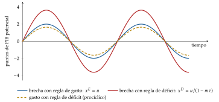
Fuente: elaboración propia con el modelo del texto (\(u_t=2\sin t\), \(m=1\), \(\tau=0{,}45\)).
iii) Implicaciones
Una regla de saldo total es procíclica; una de saldo estructural lo corrige, pero depende de una brecha de producción que no se observa y se revisa mucho.
Una regla de gasto es anticíclica y observable: el Gobierno controla el gasto, no los ingresos, y la regla no obliga a gastar los ingresos extraordinarios de las expansiones.
La regla de gasto necesita un ancla: la senda tiene que ser coherente con una deuda sostenible; si no, puede crecer sin freno. Por eso el marco de 2024 la ancla en un análisis de sostenibilidad (II.1.4).
c) Extensiones
Medidas de ingresos: si el Gobierno baja impuestos, el gasto «neto» tiene que crecer menos; por eso la regla europea descuenta del gasto las medidas discrecionales de ingresos.
Cláusulas de escape: hacen la regla contingente al estado del mundo, lo que gana flexibilidad sin perder credibilidad si las activa alguien independiente.
De reglas a estándares: Blanchard, Leandro y Zettelmeyer (2021) proponen sustituir las reglas numéricas por un estándar cualitativo (la deuda tiene que ser sostenible con alta probabilidad), juzgado por consejos fiscales y, en último término, por un tribunal.
d) Evidencia empírica
En una muestra amplia de países, las reglas de gasto se cumplen más que las de saldo y se asocian con una política fiscal menos procíclica.
La política fiscal de la zona del euro fue procíclica en la consolidación de 2011-2013, con reglas de saldo, y el Consejo Fiscal Europeo ha encontrado la misma pauta en otras expansiones.
e) Valoración
El modelo da la razón de fondo de la reforma de 2024: un solo indicador, observable y anticíclico.
Pero calla sobre lo difícil: cuánto puede crecer el gasto de cada Estado. Eso lo decide un análisis de sostenibilidad de su deuda.
II.1.3. El marco de 2024
Las normas, adoptadas el 29 de abril de 2024 y en vigor desde el 30 de abril:
el Reglamento (UE) 2024/1263, nuevo brazo preventivo, que sustituye al 1466/97;
el Reglamento (UE) 2024/1264, que reforma el brazo correctivo (1467/97);
la Directiva (UE) 2024/1265, sobre los marcos presupuestarios nacionales (previsiones, instituciones fiscales independientes, planificación a medio plazo).
Lo que no cambia: los valores de referencia del Tratado (3 % y 60 %) y el PDE por déficit.
Lo que cambia, en 6 piezas (figura 3):
El análisis de sostenibilidad de la deuda (ASD): la Comisión envía a cada Estado con deuda de más del 60 % o déficit de más del 3 % una trayectoria de referencia, que garantiza que, al acabar el ajuste, la deuda baje de forma plausible durante 10 años (o se quede por debajo del 60 %) y el déficit no supere el 3 % en ese plazo.
Un único indicador operativo: el gasto primario neto, es decir, el gasto público sin intereses, sin el gasto cíclico en desempleo, sin el financiado con fondos de la Unión y sin el efecto de las medidas discrecionales de ingresos.
Los planes fiscales-estructurales de medio plazo: cada Estado presenta un plan de 4 o 5 años (según la legislatura) con su senda de gasto neto. El ajuste se hace en 4 años, ampliables hasta 7 si el Estado se compromete a reformas e inversiones que mejoren el crecimiento y la sostenibilidad. La Comisión lo evalúa y el Consejo lo aprueba.
Dos salvaguardias, mínimos comunes:
de sostenibilidad de la deuda: la deuda debe bajar de media al menos 1 punto del PIB al año si supera el 90 %, y 0,5 si está entre el 60 y el 90 %;
de resiliencia del déficit: el ajuste sigue hasta que el déficit estructural quede en el 1,5 % del PIB, con 0,4 puntos al año (0,25 si el ajuste es en 7 años).
La cuenta de control: registra las desviaciones del gasto neto respecto de la senda; si superan 0,3 puntos del PIB en un año o 0,6 acumulados, y la deuda supera el 60 %, la Comisión puede abrir un PDE por deuda.
El brazo correctivo: en un PDE por déficit el ajuste mínimo es de 0,5 puntos estructurales al año; las multas pasan a ser de hasta el 0,05 % del PIB cada 6 meses, pequeñas pero acumulables y más creíbles que el 0,2 % que nunca se impuso.
Las cláusulas de escape: la general, para una recesión grave de la zona del euro o de la Unión, y la nacional, para circunstancias excepcionales fuera del control de un Estado con gran impacto en sus finanzas. Las activa el Consejo a propuesta de la Comisión, por un tiempo limitado.
La coordinación: el plan sustituye a los antiguos programas de estabilidad y nacionales de reformas; cada 30 de abril el Estado envía un informe anual de progreso. En octubre de 2026 el Parlamento aprobó adaptar el Six-Pack y el Two-Pack al nuevo marco, a falta de la adopción del Consejo.
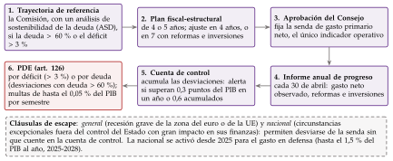
Fuente: elaboración propia a partir de los Reglamentos 2024/1263 y 2024/1264.
II.1.4. La sostenibilidad de la deuda en el nuevo marco
a) Idea
El marco de 2024 traduce una pregunta de largo plazo, ¿es sostenible la deuda?, en una cifra que el Gobierno controla cada año: cuánto puede crecer su gasto neto.
La herramienta es la ecuación de la dinámica de la deuda [ver tema 3.A.39], que aquí no se deriva: se aplica.
b) Modelo
i) Supuestos
La deuda en % del PIB evoluciona según \(d_t=\frac{1+i}{1+\gamma^N}\,d_{t-1}-s_t\), con \(s_t\) el saldo primario (superávit positivo), \(i\) el tipo implícito y \(\gamma^N\) el crecimiento nominal [ver tema 3.A.39].
Con la política fiscal sin cambios, los ingresos crecen con el PIB nominal potencial, \(\gamma^N_{p}\): su peso en el PIB es constante.
El saldo primario estructural es los ingresos menos el gasto primario neto, \(s=\tau-e\), con \(e\) el gasto neto en % del PIB.
ii) Desarrollo
Paso 1: el ajuste que pide la deuda.
La Comisión busca el saldo primario estructural que, tras el ajuste, deje la deuda en una senda descendente plausible, con escenarios adversos y estocásticos.
De ahí sale el ajuste anual, \(\Delta s\), en 4 o en 7 años.
Paso 2: del ajuste al gasto neto.
Si el gasto neto crece a \(\gamma_{GN}\) y el PIB potencial nominal a \(\gamma^N_p\), su peso cambia en \(\Delta e\approx e\,(\gamma_{GN}-\gamma^N_p)\), y el saldo, en \(\Delta s=-\Delta e\). Despejando:
\[\gamma_{GN}\approx\gamma^N_{p}-\frac{\Delta s}{e}\tag{3}\]
Con un crecimiento nominal potencial del 4,5 % y un gasto neto del 41 % del PIB, un ajuste de 0,4 puntos exige que el gasto neto crezca en torno al 3,5 %: es, en orden de magnitud, la senda aprobada para España en 2026 (II.1.5).
Paso 3: la simulación. Para un país parecido a España, con una deuda del 100,5 % del PIB en 2025, un saldo primario nulo, un tipo implícito que sube del 2,4 % al 3,5 %, un crecimiento nominal que baja del 4,5 % al 3,3 % y un coste del envejecimiento de 0,1 puntos al año desde 2029 (gráfico 3):
sin ajuste, la deuda baja hasta 2029 gracias a un crecimiento mayor que el tipo de interés y después sube, hasta el 108 % en 2041;
con un plan a 4 años (0,6 puntos al año), llega al 73 %;
con un plan a 7 años (0,35 puntos al año), al 76 %: un ajuste más suave que, con la salvaguardia, sigue bajando la deuda más de 1 punto al año de media.
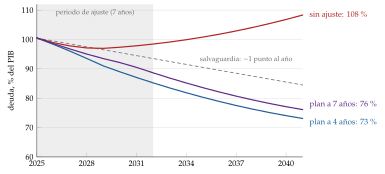
Fuente: elaboración propia con la ecuación de la dinámica de la deuda y los supuestos del texto; punto de partida, la deuda de España en 2025 (Eurostat). Es una ilustración, no el análisis de la Comisión.
iii) Implicaciones
Una regla por país: cada Estado tiene su propia senda, según su deuda, su crecimiento y su coste de financiación, en vez de la misma regla para todos.
Más tiempo a cambio de reformas: alargar el ajuste a 7 años lo suaviza, pero solo si las reformas e inversiones elevan el crecimiento potencial y bajan el riesgo.
El envejecimiento cuenta: con más gasto en pensiones y sanidad, no basta con que la deuda baje sola mientras el crecimiento supere al tipo de interés.
c) Extensiones
Escenarios estocásticos: la Comisión exige que la deuda baje con alta probabilidad (en el 70 % de las simulaciones), no solo en el escenario central.
El tipo de interés depende de la deuda: con primas de riesgo crecientes, el efecto bola de nieve se acelera y hay equilibrios múltiples [ver tema 3.A.39].
d) Evidencia empírica
El plan de España, aprobado en enero de 2025, proyecta una deuda del 96,6 % del PIB en 2028, del 90,6 % en 2031 y del 76,8 % en 2041, con un ajuste en 7 años: muy cerca de la simulación del gráfico.
e) Valoración
El marco es más económico (cada país según su deuda) y más sencillo de vigilar (un solo indicador observable).
Pero depende de supuestos discutibles, el crecimiento potencial, los tipos de interés y el envejecimiento, que calcula la Comisión; da mucho margen a la negociación bilateral y sigue sin un buen mecanismo para hacerse cumplir. La prueba es su aplicación.
II.1.5. La aplicación del marco en 2025-2026
Los planes: el 21 de enero de 2025 el Consejo aprobó las sendas de gasto de 21 Estados, y después las de los demás, salvo los Países Bajos, cuyo plan no cumplía. Ajustan en 7 años 8 Estados: Bélgica, Alemania, España, Francia, Italia, Austria, Rumanía y Finlandia.
Los procedimientos de déficit excesivo (gráfico 4):
en julio de 2024 se abrieron 7 (Bélgica, Francia, Italia, Hungría, Malta, Polonia y Eslovaquia), que se sumaron al de Rumanía (2020);
después, Austria (julio de 2025), Finlandia (enero de 2026) y Bulgaria (julio de 2026, con un déficit previsto del 4,1 % para 2026); el de Malta se cerró en junio de 2026;
en noviembre de 2026 hay 10 abiertos: Austria, Bélgica, Bulgaria, Finlandia, Francia, Hungría, Italia, Polonia, Rumanía y Eslovaquia. Ninguno es por deuda.
La cláusula nacional de escape para la defensa: en marzo de 2025, con el plan ReArm Europe/Readiness 2030, la Comisión invitó a los Estados a pedirla para aumentar el gasto en defensa hasta en 1,5 puntos del PIB al año en 2025-2028.
el Consejo la activó en julio de 2025 para 15 Estados (Bélgica, Bulgaria, Croacia, Chequia, Dinamarca, Estonia, Finlandia, Grecia, Hungría, Letonia, Lituania, Polonia, Portugal, Eslovaquia y Eslovenia), después para Alemania (octubre de 2025), Austria (febrero de 2026) y España (junio de 2026);
en 2026 se amplió a las medidas de seguridad energética, con hasta 0,3 puntos del PIB al año dentro del mismo límite.
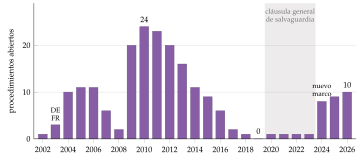
Fuente: elaboración propia a partir de las decisiones del Consejo de apertura y cierre de cada procedimiento recogidas por la Comisión Europea. A 31 de diciembre de cada año; 2026, a 14 de noviembre.
España
El punto de partida: tras su PDE de 2009-2019, España cerró 2025 con un déficit del 2,4 % del PIB y una deuda del 100,5 % (gráfico 5).
El plan: el Plan Fiscal y Estructural de Medio Plazo 2025-2028, aprobado en enero de 2025 con el ajuste ampliado a 7 años (2025-2031), fija un crecimiento máximo del gasto neto del 3,7 % en 2025, del 3,5 % en 2026, del 3,2 % en 2027 y del 3,0 % en 2028, y un déficit que baja del 2,5 % al 1,6 % del PIB [ver tema 4.B.23].
Su cumplimiento (gráfico 6):
en 2025 el gasto neto creció un 4,8 %: una desviación de 0,4 puntos del PIB en el año, que la Comisión considera dentro del margen de la cláusula de defensa;
en noviembre de 2026 la AIReF prevé un crecimiento del 7,3 % en 2026 y del 5,1 % en 2027, un incumplimiento que no cubren ni la cuenta de control ni la cláusula de escape.
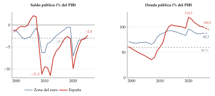
Fuente: Eurostat, notificación del PDE de octubre de 2026; previsión de la deuda para 2026-2027 del FMI (línea discontinua).
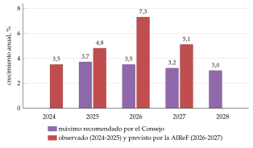
Fuente: Consejo de la Unión Europea (2024-2025) y AIReF (previsión para 2026-2027).
II.2. El Procedimiento de Desequilibrios Macroeconómicos
Por qué: la crisis del euro no empezó en las cuentas públicas de todos: España e Irlanda tenían superávit en 2007. Empezó en desequilibrios privados y exteriores (crédito, vivienda, déficits por cuenta corriente, pérdida de competitividad) que acabaron en el balance del Estado [ver tema 3.B.26]. El Six-Pack creó en 2011 el PDM para vigilarlos.
Las fases:
Alerta: cada otoño, el informe del mecanismo de alerta lee un cuadro de indicadores con umbrales (tabla 1) y elige los Estados que merecen un examen.
Examen exhaustivo: la Comisión analiza cada Estado elegido y concluye, en primavera, si no tiene desequilibrios, si los tiene o si son excesivos.
Corrección: con desequilibrios excesivos, el Consejo puede abrir el procedimiento de desequilibrio excesivo, con un plan de acción correctora; en la zona del euro, si no cumple, un depósito o una multa de hasta el 0,1 % del PIB.
Los umbrales son alertas, no reglas: superar uno no significa tener un desequilibrio. Los exteriores son asimétricos con un margen para el superávit, de modo que también un gran superávit puede ser un desequilibrio [ver tema 3.B.12].
| Ámbito | Indicador | Umbral |
|---|---|---|
| Exterior | Saldo por cuenta corriente, media de 3 años, % del PIB | \(-4\) % y \(+6\) % |
| Posición de inversión internacional neta, % del PIB | \(-35\) % | |
| Competitividad | Tipo de cambio efectivo real, variación en 3 años | \(\pm3\) % (zona del euro); \(\pm10\) % |
| Resultados de exportación frente a las economías avanzadas, variación en 3 años | \(-3\) % | |
| Costes laborales unitarios nominales por hora, variación en 3 años | \(+9\) % (zona del euro); \(+12\) % | |
| Interior | Precio nominal de la vivienda, variación anual | \(+9\) % |
| Deuda de los hogares, % del PIB | 55 % | |
| Deuda de las sociedades no financieras, % del PIB | 85 % | |
| Flujo de crédito a hogares y a empresas, % de su deuda | 14 % y 13 % | |
| Deuda de las Administraciones Públicas, % del PIB | 60 % | |
| Empleo | Tasa de paro | 10 % |
| Tasa de actividad, variación en 3 años | \(-0{,}2\) puntos |
Fuente: Comisión Europea, informe del mecanismo de alerta de 2026. Es el cuadro revisado que se aplica desde el informe de 2025.
El ciclo de 2026: el informe de alerta de noviembre de 2025 eligió 7 Estados (Grecia, Italia, Hungría, Países Bajos, Rumanía, Eslovaquia y Suecia); en junio de 2026, Grecia, los Países Bajos y Suecia dejaron de tener desequilibrios; Italia, Hungría y Eslovaquia los siguen teniendo, y Rumanía, excesivos.
El procedimiento de desequilibrio excesivo nunca se ha abierto, ni siquiera a Estados con desequilibrios excesivos: es el punto débil del PDM.
España: tuvo desequilibrios desde 2012 (excesivos en 2013) por su deuda externa, pública y privada y su paro; en la primavera de 2024 la Comisión concluyó que ya no los tenía, y en 2025 y 2026 no ha sido elegida para examen [ver tema 4.A.29].
Valoración: el PDM ha mejorado el análisis, pero sus recomendaciones se cumplen poco y su lado correctivo no se usa; además, trata igual los déficits que los superávits solo en teoría: los superávits alemanes y neerlandeses nunca llevaron a medidas.
II.3. El Semestre Europeo
Qué es: desde 2011, el Semestre Europeo es el calendario común en el que se coordinan y vigilan a la vez las políticas fiscales, los desequilibrios, las reformas y el empleo, para que las recomendaciones lleguen antes de que los Estados hagan sus presupuestos.
El ciclo (figura 4):
Noviembre: el paquete de otoño de la Comisión, con el estudio prospectivo anual de crecimiento sostenible, el informe de alerta del PDM, los dictámenes sobre los proyectos de presupuesto de la zona del euro y una recomendación para la zona del euro (el de 2026 se publicó el 25 de noviembre de 2025).
Invierno: el Eurogrupo y el Consejo aprueban la recomendación para la zona del euro, y el Consejo Europeo de primavera da orientaciones.
30 de abril: los Estados envían sus informes anuales de progreso.
Junio: el paquete de primavera: informes por país, exámenes exhaustivos, pasos de los PDE y propuestas de recomendaciones específicas por país (REP); el de 2026 se publicó el 3 de junio.
Julio: el Consejo adopta las REP (el 10 de julio en 2026) y el Consejo Europeo las respalda. Empieza el semestre nacional: los Estados deben tenerlas en cuenta en sus presupuestos, que los del euro envían antes del 15 de octubre.
Su integración con el MRR: de 2021 a 2026, los planes de recuperación tenían que atender una parte significativa de las REP, y los pagos dependían de hitos que las traducían en reformas: por primera vez las recomendaciones tenían dinero detrás [ver tema 3.B.37].
Cuánto se cumplen: poco. En las evaluaciones anuales de la Comisión son pocas las REP que se aplican del todo o de forma sustancial, y la mayoría solo avanzan «algo»; con el MRR el cumplimiento mejoró en lo que tenía hitos y pagos detrás.
La simplificación: el marco de 2024 fundió los programas de estabilidad y nacionales de reformas en el plan y su informe de progreso; con el fin del MRR en 2026, el debate es cómo mantener el incentivo para las reformas.
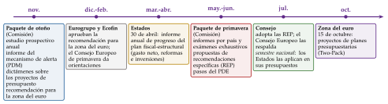
Fuente: elaboración propia a partir de los Reglamentos 2024/1263 y 473/2013 y de la Comisión Europea.
Recapitulación: las reglas de 2024 cambian el instrumento (una senda de gasto neto anclada en la sostenibilidad de la deuda de cada Estado), el PDM vigila los desequilibrios privados y exteriores y el Semestre los ordena en un calendario. Las 3 piezas previenen; cuando la prevención falla, hace falta gestionar la crisis.
III. La gestión de crisis y la respuesta fiscal común
Terminamos con lo que pasa cuando la prevención falla: quién ayuda a un Estado en crisis y cómo ha respondido la Unión a las crisis comunes.
Conclusión anticipada: la zona del euro creó en 2010-2012, sobre la marcha, un prestamista para los Estados, el MEDE, que presta con condiciones; ante la pandemia, en cambio, la Unión respondió en común y con deuda propia (SURE, NextGenerationEU), y lo ha repetido para la defensa (SAFE). Pero no hay todavía una capacidad fiscal central permanente.
III.1. El Mecanismo Europeo de Estabilidad
III.1.1. Del préstamo a Grecia al MEDE
El vacío de partida: en 2010 la zona del euro no tenía ningún instrumento para ayudar a un Estado que perdiera el acceso a los mercados, y el art. 125 parecía prohibirlo.
Las soluciones temporales (2010), con el FMI [ver tema 3.B.22]:
los préstamos bilaterales de los Estados del euro a Grecia (mayo de 2010), 52.900 millones de euros;
el Mecanismo Europeo de Estabilización Financiera (MEEF), de la Unión (art. 122.2), con hasta 60.000 millones garantizados por el presupuesto: Irlanda, Portugal y un préstamo puente a Grecia en 2015 [ver tema 3.B.37];
la Facilidad Europea de Estabilización Financiera (FEEF), una sociedad luxemburguesa de los Estados del euro, con garantías de hasta 440.000 millones: Irlanda, Portugal y el segundo programa de Grecia.
El mecanismo permanente: para darle base sólida se añadió al art. 136 TFUE un apartado 3 (2011), y los Estados del euro firmaron el Tratado del MEDE el 2 de febrero de 2012; entró en vigor el 27 de septiembre y empezó a funcionar el 8 de octubre de 2012.
III.1.2. Qué es y cómo funciona
Naturaleza: una organización intergubernamental con sede en Luxemburgo, fuera del ordenamiento de la Unión. Sus miembros son los Estados del euro: 21 desde la adhesión de Bulgaria el 29 de junio de 2026.
Gobierno: una Junta de Gobernadores (los ministros de Finanzas, presidida por el presidente del Eurogrupo), un Consejo de Administración y un director gerente, Pierre Gramegna desde diciembre de 2022. Las decisiones importantes se toman por mutuo acuerdo, con un procedimiento de urgencia del 85 % de los votos, que da a Alemania, Francia e Italia derecho de veto.
Capital: 714.700 millones de euros suscritos, de los que 81.700 están desembolsados, según una clave parecida a la del BCE; España aporta en torno al 12 %.
Capacidad de préstamo: 500.000 millones de euros, de los que 432.000 están disponibles; se financia en los mercados con la máxima calificación.
Instrumentos:
préstamos con un programa de ajuste macroeconómico;
líneas de crédito precautorias (con condiciones previas o reforzadas);
compras de deuda en los mercados primario y secundario;
préstamos para recapitalizar bancos, de forma indirecta (al Estado, como en España) o directa (a los bancos, nunca usada).
La condicionalidad: la ayuda se concede con un memorando de entendimiento (MoU) que negocia la Comisión, con el BCE y, si participa, el FMI (la «troika», hoy «instituciones»), y que vigilan después. Es además la puerta de las compras ilimitadas del BCE (OMT): solo pueden activarse para un Estado con un programa del MEDE [ver tema 3.B.43].
Acreedor preferente: solo por detrás del FMI.
III.1.3. Los programas
Entre 2010 y 2018, 5 Estados recibieron programas (gráfico 7):
Grecia: 3 programas (2010, 2012 y 2015-2018), con unos 256.600 millones de euros entre préstamos bilaterales, FEEF y MEDE, y la quita a los acreedores privados de 2012; salió del último en agosto de 2018. Ha ido devolviendo por adelantado los préstamos bilaterales, el último en junio de 2026;
Irlanda (2010-2013), por su crisis bancaria, y Portugal (2011-2014), cada uno con unos 40.000-50.000 millones de la FEEF y del MEEF;
Chipre (2013-2016), 6.300 millones del MEDE, con la primera recapitalización interna (bail-in) de los depositantes por encima de 100.000 euros [ver tema 3.B.44];
España (2012-2013), un programa solo para el sector financiero (III.1.3).
La línea pandémica: en 2020 el MEDE ofreció a todos sus miembros una línea de hasta el 2 % del PIB (240.000 millones en total) para gasto sanitario, con la única condición de su destino. Nadie la pidió, por el estigma de acudir al MEDE, y expiró a finales de 2022.
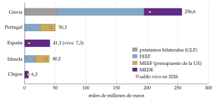
Fuente: MEDE y Comisión Europea. Saldo vivo en la última fecha disponible de 2025 o 2026.
El préstamo a España (2012)
Por qué: en 2012 la crisis de las cajas de ahorros (Bankia en mayo) llevó la prima de riesgo a más de 600 puntos básicos, y el Estado no podía financiar el saneamiento [ver tema 4.A.28].
Qué: el 9 de junio de 2012 el Eurogrupo aceptó prestar hasta 100.000 millones de euros, y el MoU se firmó el 20 de julio. Se usaron 41.333 millones, desembolsados en diciembre de 2012 y febrero de 2013 al FROB, que recapitalizó las entidades nacionalizadas y financió la Sareb.
Con qué condiciones: solo financieras (pruebas de resistencia, segregación de activos dañados, reestructuración o resolución de las entidades con ayudas, más poderes al Banco de España), además de cumplir el PDE y las recomendaciones del Semestre. España salió del programa en enero de 2014.
La devolución: con amortizaciones anticipadas desde 2014, a finales de 2025 había devuelto unos 34.000 millones, y le quedan unos 7.300, con el último vencimiento a finales de 2027.
III.1.4. La reforma del Tratado y el futuro del MEDE
La reforma (firmada en enero de 2021):
el MEDE sería el respaldo común (common backstop) del Fondo Único de Resolución, con una línea de crédito de hasta 68.000 millones [ver tema 3.B.44];
las líneas precautorias serían más fáciles de pedir, y el MEDE tendría más papel en el diseño y el seguimiento de los programas.
Su estado en noviembre de 2026: la han ratificado todos menos Italia, cuya Cámara de Diputados la rechazó en diciembre de 2023; sin ella, el respaldo común no puede activarse, aunque el MEDE reserva ya esos 68.000 millones de su capacidad.
El debate sobre su futuro:
tiene una capacidad casi sin usar y un estigma que nadie quiere asumir;
se ha propuesto integrarlo en el Derecho de la Unión como un Fondo Monetario Europeo (Comisión, 2017), usarlo como capacidad de estabilización o para financiar bienes públicos como la defensa; su director gerente lo ha descartado para la defensa, que su Tratado no permite.
III.2. La respuesta común a partir de la covid-19
El contraste con 2010: la pandemia fue una perturbación común, simétrica y ajena a las políticas de los Estados, sin riesgo moral. La respuesta fue la contraria a la de la crisis del euro: suspender las reglas y gastar en común [ver tema 3.A.40].
Las 4 redes de 2020 (abril, Eurogrupo): el MEDE (240.000 millones, sin usar), el SURE (100.000), el Fondo de Garantía Paneuropeo del BEI (25.000 de garantías, unos 200.000 de financiación) y, en julio, el NextGenerationEU. En paralelo, el BCE lanzó su programa de compras de emergencia (PEPP) [ver tema 3.B.43].
III.2.1. La cláusula general de salvaguardia
Activada el 23 de marzo de 2020 por primera vez, permitió desviarse del ajuste sin abrir procedimientos; se mantuvo hasta finales de 2023, por la pandemia y después por la guerra de Ucrania y la crisis energética. El déficit de la zona del euro pasó del 0,5 % del PIB en 2019 al 7,0 % en 2020 (gráfico 5).
III.2.2. El SURE
Qué: el instrumento europeo de apoyo temporal para atenuar los riesgos de desempleo en una emergencia (SURE, Reglamento 2020/672, art. 122) prestó a los Estados, con deuda de la Unión emitida como bonos sociales, para pagar los regímenes de reducción de jornada (en España, los ERTE).
Cuánto: 100.000 millones de euros, garantizados en un 25 % por los Estados; se prestaron 98.400 millones a 19 Estados, 21.324 a España, hasta el 31 de diciembre de 2022 (gráfico 8).
Sus efectos: en 2020 sostuvo a unos 31,5 millones de trabajadores y 2,5 millones de empresas, ayudó a evitar 1,5 millones de parados y ahorró a los Estados unos 9.000 millones en intereses (1.580 a España).
Su lógica: no es una transferencia sino un préstamo barato, pero es el primer embrión de un reaseguro europeo de desempleo, uno de los instrumentos clásicos de una capacidad fiscal (III.3) [ver tema 3.B.40].
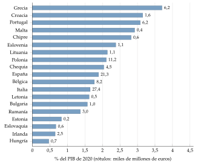
Fuente: Comisión Europea y Eurostat (PIB).
III.2.3. El NextGenerationEU como política fiscal común
Qué: hasta 750.000 millones de euros de 2018 (806.900 corrientes), financiados con deuda de la Unión que se devolverá con el presupuesto hasta 2058; su pieza central es el Mecanismo de Recuperación y Resiliencia (MRR), con subvenciones y préstamos a cambio de reformas e inversiones. Su financiación, su encaje en el presupuesto y su devolución se estudian aparte [ver tema 3.B.37].
Por qué es un salto en la gobernanza:
es la primera vez que la Unión se endeuda a gran escala para transferir recursos a los Estados, no solo para prestar;
reparte más a los más afectados y a los más pobres: es una redistribución entre Estados con un fin de estabilización;
liga el dinero a las recomendaciones del Semestre, mediante hitos y objetivos (II.3).
Su balance: a 1 de octubre de 2026 se habían pagado 450.000 millones, el 79 % del total, y los pagos acaban el 31 de diciembre de 2026; la Comisión estima que el NGEU puede elevar el PIB de la Unión hasta un 1,4 % en 2026.
Su límite: es temporal, excepcional y ligado a una crisis concreta; el Tribunal Constitucional alemán lo aceptó por eso, y no puede convertirse en financiación permanente sin otra decisión unánime.
III.2.4. De la energía a la defensa: REPowerEU y SAFE
REPowerEU (2022): tras la invasión de Ucrania, se usaron los préstamos del MRR que nadie había pedido (225.000 millones) y 20.000 millones de subvenciones del régimen de derechos de emisión para reducir la dependencia del gas ruso, en capítulos nuevos de los planes.
ReArm Europe/Readiness 2030 (marzo de 2025): un plan para movilizar hasta 800.000 millones en defensa, con 2 piezas:
el margen fiscal de la cláusula nacional de escape, hasta 1,5 puntos del PIB al año (II.1.5);
el SAFE (Reglamento 2025/1106, art. 122): 150.000 millones de euros en préstamos de la Unión a largo plazo para compras conjuntas de defensa. Lo piden 19 Estados (Polonia, 43.700 millones; España, 1.000); el primer pago fue a Polonia el 29 de mayo de 2026, y en octubre se habían desembolsado 13.500 millones a 11 Estados y se abrió una segunda convocatoria por 21.300 millones.
La lógica es la de la covid-19, pero con préstamos: deuda de la Unión para un bien público europeo.
III.3. ¿Hacia una capacidad fiscal central?
a) Idea
En una unión monetaria, un Estado golpeado por una perturbación propia no puede devaluar ni bajar su tipo de interés. Lo que en un Estado federal amortigua el golpe son las transferencias del presupuesto central: los impuestos federales bajan y las prestaciones suben solos. Es el argumento de Kenen sobre el federalismo fiscal en las áreas monetarias óptimas [ver tema 3.B.16] [ver tema 4.B.14].
Farhi y Werning (2017) añaden por qué el mercado no basta: con precios rígidos y tipo de cambio fijo, cada hogar que se asegura no tiene en cuenta que su gasto sostiene la demanda de su región (una externalidad de demanda agregada), así que se asegura de menos aunque los mercados sean completos. Hace falta un seguro público entre regiones.
b) Modelo
i) Supuestos
2 regiones, A y B, con una moneda y un tipo de interés comunes; el banco central estabiliza la media, que es nula.
Perturbaciones asimétricas: \(u_A=-u_B=u\).
Sin capacidad fiscal, la brecha de cada región es su perturbación, \(x_i=u_i\).
Con una capacidad fiscal central, cada región recibe una transferencia neta \(T_i=-\phi\,x_i\) (paga en las expansiones y recibe en las recesiones), con un multiplicador \(m\): \(x_i=u_i+m\,T_i\).
ii) Desarrollo
Paso 1: la brecha con transferencias. Sustituyendo, \(x_i=u_i-m\phi\,x_i\):
\[x_i=\frac{u_i}{1+m\phi}\tag{4}\]
Paso 2: el presupuesto central. Como \(T_A=-T_B\), las transferencias suman cero en cada periodo: la capacidad fiscal se financia sola ante perturbaciones asimétricas y no necesita deuda.
Paso 3: cuánto estabiliza. La parte de la perturbación que amortigua es \(m\phi/(1+m\phi)\): con \(m=1\) y \(\phi=0{,}5\), un tercio (gráfico 9).
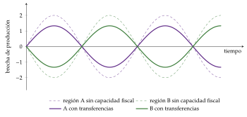
Fuente: elaboración propia con el modelo del texto (\(u_A=-u_B=2\sin t\), \(m=1\), \(\phi=0{,}5\)), a partir de la idea de Farhi y Werning (2017).
iii) Implicaciones
Una capacidad fiscal pequeña estabiliza mucho si responde automáticamente al ciclo: un reaseguro de desempleo o un fondo para inversiones en las recesiones.
Ante una perturbación común (la pandemia) las transferencias no suman cero: hace falta deuda común, como el SURE o el NGEU.
Complementa las reglas: con un seguro común, las reglas nacionales pueden ser más estrictas sin dejar a los Estados sin estabilizadores.
c) Extensiones
Riesgo moral: si las perturbaciones no son exógenas, un Estado puede relajar sus reformas sabiendo que recibirá transferencias; por eso las propuestas incluyen condiciones, límites o devoluciones.
Unión de transferencias: si las perturbaciones son permanentes, las transferencias no se compensan y se convierten en una redistribución estable entre Estados, que los contribuyentes rechazan.
Seguro privado: una unión de los mercados de capitales y una unión bancaria completa reparten riesgos por la vía privada [ver tema 3.B.44].
d) Evidencia empírica
En Estados Unidos, Asdrubali, Sørensen y Yosha (1996) encuentran que, entre 1963 y 1990, los mercados de capitales amortiguaron el 39 % de las perturbaciones de cada Estado, el crédito el 23 % y el Gobierno federal el 13 %; quedaba sin amortiguar el 25 %.
En la zona del euro el reparto de riesgos es mucho menor, con un presupuesto común del 1 % de la renta y sin transferencias automáticas.
El SURE y el NGEU estabilizaron en una crisis común, pero de forma discrecional y temporal.
e) Valoración
El debate: el informe de Mario Draghi (2024) calcula que la Unión necesita invertir entre 750.000 y 800.000 millones de euros más al año (un 4,4-4,7 % de su PIB) y pide financiar en común los bienes públicos europeos; el de Enrico Letta (2024) pide completar el mercado único y la unión de ahorros e inversiones.
Lo que hay sobre la mesa: la propuesta del marco financiero de 2028-2034 incluye un Fondo Europeo de Competitividad de 409.000 millones y un mecanismo de crisis con hasta 395.000 millones en préstamos, pero no una capacidad de estabilización automática [ver tema 3.B.37].
El obstáculo es político: exige unanimidad, confianza entre acreedores y deudores y, para muchos, una reforma de los Tratados.
Recapitulación: la zona del euro tiene un prestamista para los Estados en crisis, el MEDE, y ha aprendido a responder en común a las crisis comunes con deuda de la Unión; le falta una capacidad fiscal permanente que estabilice sin depender de cada cumbre.
Conclusión
Recapitulación:
En conclusión, una moneda común con 21 políticas fiscales necesita reglas, porque cada Estado, por su cuenta, se endeuda de más; las reglas del Pacto de Estabilidad fueron complejas, procíclicas e incumplidas, y el marco de 2024 las sustituye por una senda de gasto neto anclada en la sostenibilidad de la deuda de cada Estado.
El PDM vigila los desequilibrios privados y exteriores, y el Semestre Europeo ordena todo en un calendario.
Cuando la prevención falla, el MEDE presta con condiciones; ante las crisis comunes, la Unión ha aprendido a responder con deuda común: SURE, NextGenerationEU y SAFE.
Relevancia:
Para España, la gobernanza europea es a la vez un ancla y una restricción: la rescató en 2012, financió su recuperación y fija hasta 2031 cuánto puede crecer su gasto; cumplir el plan es hoy su principal reto fiscal [ver tema 4.B.26].
Extensiones:
La teoría de la integración monetaria [ver tema 3.B.16]; el origen del euro y el BCE [ver tema 3.B.43]; la unión bancaria [ver tema 3.B.44]; el presupuesto y la deuda de la Unión [ver tema 3.B.37]; la dinámica de la deuda [ver tema 3.A.39]; el saldo estructural [ver tema 4.B.4]; las finanzas públicas de España y su plan fiscal [ver tema 4.B.23].
Opinión:
El marco de 2024 es mejor que el que sustituye, pero su credibilidad se juega ahora: con 10 procedimientos abiertos, la cláusula de escape para la defensa y los primeros incumplimientos de los planes, si la Comisión y el Consejo no lo hacen cumplir, volverá a ser papel mojado. Y sin una capacidad fiscal común permanente, la próxima crisis volverá a depender de una cumbre de madrugada.
Idea final:
Volvamos a la pregunta: ¿cómo se gobierna una moneda común sin un Tesoro común? Hasta ahora, con el refrán: ayúdate y Dios te ayudará. Cada Estado responde de sus cuentas, y la ayuda común llega con condiciones. La pandemia mostró que, cuando el golpe es de todos, la ayuda puede llegar antes y sin castigo; el reto es que eso no dependa de que vuelva a caer otro.
A. Anexo: las reglas del Pacto de Estabilidad antes de 2024
El brazo preventivo (Reglamento 1466/97, reformado en 2005 y 2011):
el objetivo presupuestario a medio plazo (OMP), específico de cada país y en términos estructurales (saldo corregido del ciclo y sin medidas puntuales), con un déficit máximo del 1 % del PIB (del 0,5 % para los firmantes del pacto fiscal del TECG, o del 1 % si su deuda era claramente inferior al 60 %); se revisaba cada 3 años;
la senda de ajuste hacia el OMP: 0,5 puntos del PIB al año como referencia, más en las expansiones y menos en las recesiones (la «matriz» de 2015);
la regla de gasto (2011): el gasto, neto de medidas discrecionales de ingresos, no podía crecer más que el PIB potencial a medio plazo;
la desviación significativa: 0,5 puntos del PIB en un año o 0,25 de media en 2 años, que abría un procedimiento con advertencia y, en la zona del euro, un depósito con intereses del 0,2 % del PIB;
los programas de estabilidad (zona del euro) o de convergencia (resto), cada abril, con datos de \(t-1\) a \(t+3\).
El brazo correctivo (Reglamento 1467/97):
la Comisión elabora un informe (art. 126.3) si el déficit supera el 3 % o la deuda el 60 % sin bajar 1/20 al año del exceso (media de 3 años);
el Consejo decide si hay déficit excesivo (art. 126.6) y recomienda corregirlo, normalmente en el año siguiente, con un esfuerzo estructural mínimo de 0,5 puntos;
si el Estado no toma medidas eficaces, el Consejo le advierte (art. 126.9) y, en la zona del euro, puede imponer un depósito sin intereses del 0,2 % del PIB y, después, una multa de hasta el 0,5 % (art. 126.11), aprobadas por mayoría cualificada inversa desde 2011;
además, se pueden suspender los compromisos de los fondos estructurales y de cohesión [ver tema 3.B.40].
Las sanciones nunca se aplicaron: en 2016 el Consejo fijó en cero las multas a España y Portugal, el único caso en que se llegó a esa fase.
B. Anexo: preguntas de test
Preguntas tipo test del primer ejercicio: simulador de test.
Bibliografía
Es la inconsistencia temporal de Kydland y Prescott (1977) aplicada a la unión: lo que el banco central promete hoy no lo cumplirá mañana si la deuda es alta. Kydland y Prescott recibieron el Premio Nobel en 2004 «por sus contribuciones a la macroeconomía dinámica: la consistencia temporal de la política económica y las fuerzas que impulsan los ciclos económicos».↩︎